| 日付 | 2022年11月27日（日） |
|---|---|
| 山域 | 奥多摩 |
| メンバー | 家族（妻、長男・9歳） |
| 山行形態 | 子連れ日帰り |
| アクセス | 電車、バス |
| ルート (Map) | 払沢の滝入口 (9:06) - (9:20) 払沢の滝 - (9:41) 払沢の滝入口 - (10:22) 時坂峠 - (11:39) 浅間嶺 (12:09) - (13:44) 数馬峠 - (14:13) 浅間尾根登山口 |
息子の秋大会が終わったら、秋も終わってしまっていた。
久々に息子を連れだして山に行くことにする。
娘が修学旅行から帰ってくる日で、家に戻るのが遅れる訳にはいかないので
時間の読める電車とバスで出かけることにする。
行先は浅間嶺。16年振りの超久々の再訪だ。
払沢の滝入口バス停に到着。標高270m。
バスは朝から大混雑だ。
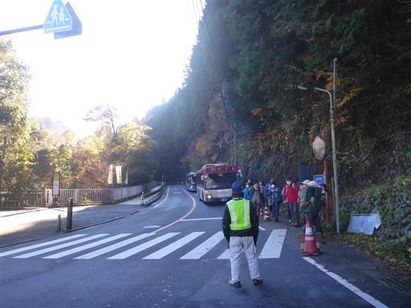
今日はよく晴れている。秋が深まり、冬の訪れが間近だ。
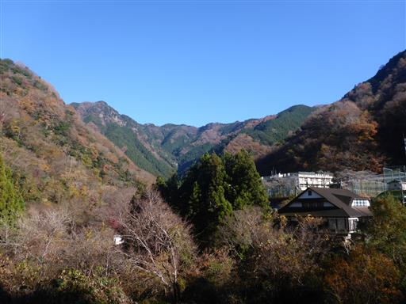
まずは払沢の滝に向かう。道中にある謎の郵便局は16年前と変わらない佇まいだ。
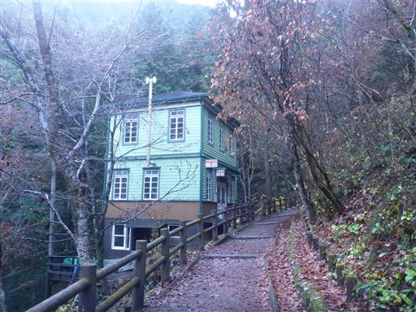
払沢の滝が見えてきた。落差26mの美しい滝だ。
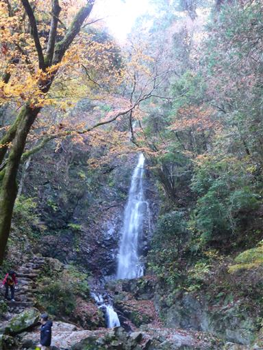
滝壺の近くまで行くことができる。
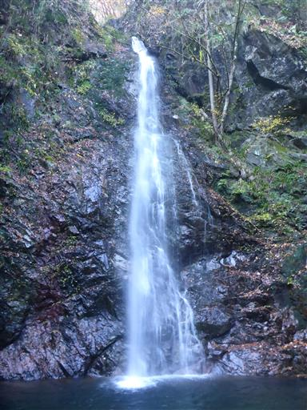
来た道を戻る。沢沿いの道に光が差し込んで美しい。
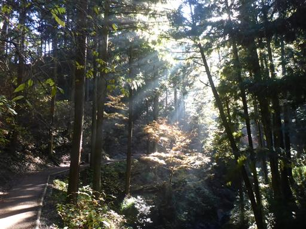
こんなところにガチャガチャ。500円とかなり高い。
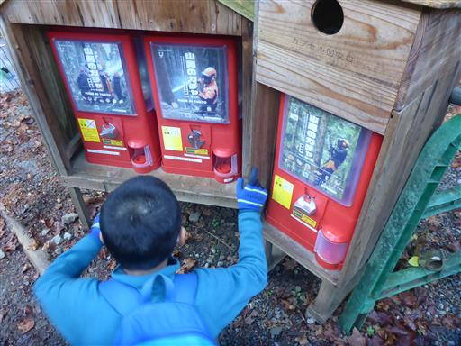
行きには気付かなかった人の顔をした建物。どうやら喫茶店のようだ。
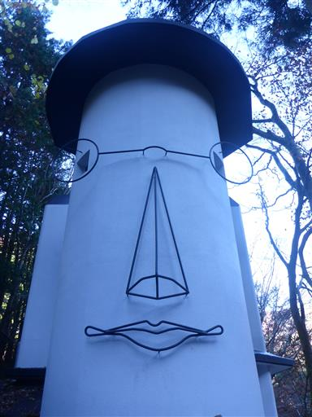
バス停付近まで戻ってきたら、ここから浅間嶺への登山を開始する。
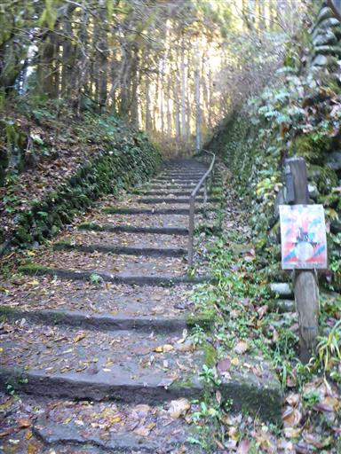
車道のそばには紅葉がきれいに残っている。
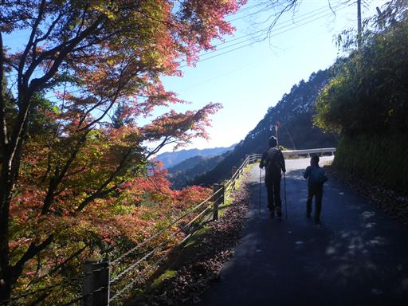
登山道に入っても紅葉が見られる。まだギリギリ紅葉が残っていてよかった。
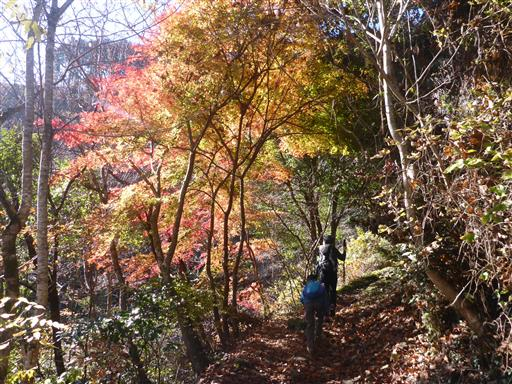
展望が大きく広がる。
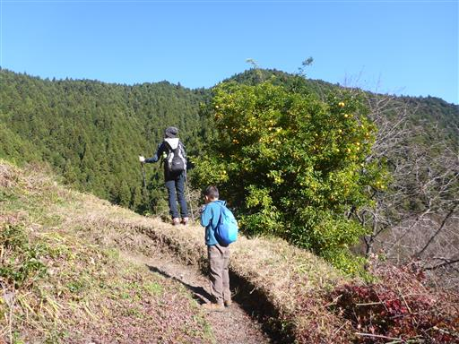
山の中腹のこんな場所にも民家がある。
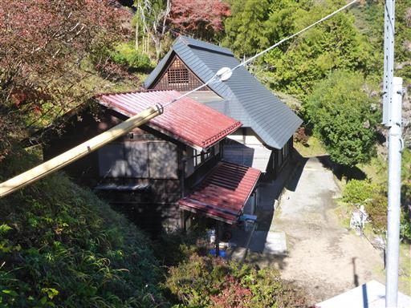
時坂峠を通過。峠の茶屋はもう閉鎖されて久しいようだ。
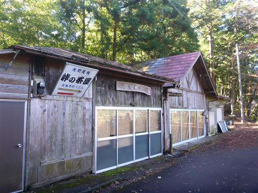
再び展望が広がる場所に到着。
奥に見えるのは大岳山だろうか？こちらも長い間ご無沙汰の山だ。
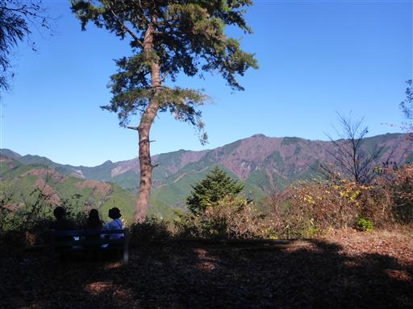
小さな神社に寄り道する。
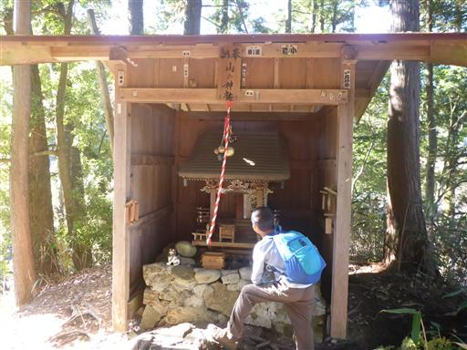
登山道の脇にある石仏。純白の頭巾をかぶっている。
誰かがときどき取り換えているのだろうか？
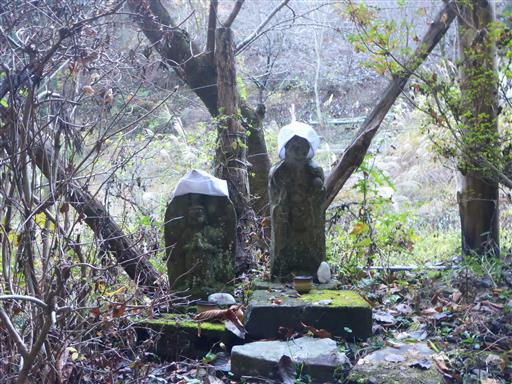
お代官休息所跡。ここも閉まっているようだ。
門の上には植物が育っている。
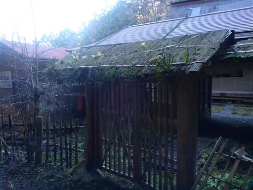
巨大な木の根。
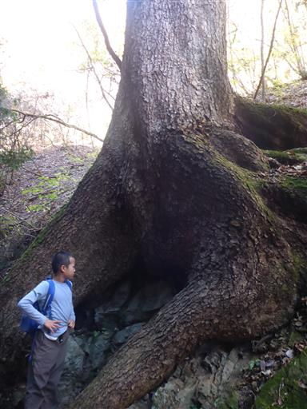
立派な御前山の姿が良く見える。
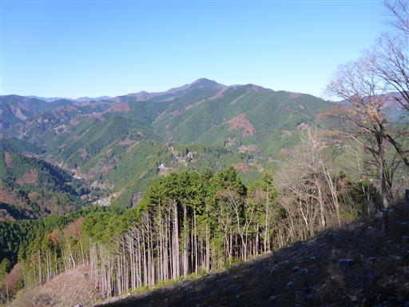
謎の木組み。何のためにあるのだろう？
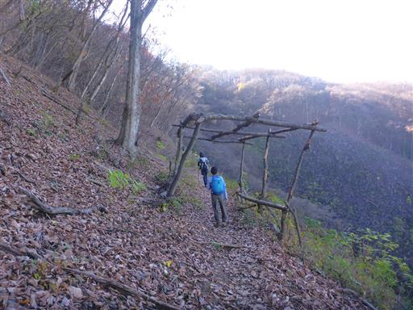
山頂近くになると、葉は全てなくなって冬枯れの景色になる。
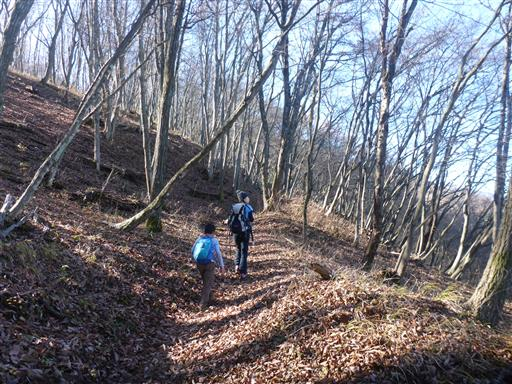
浅間尾根休憩所に到着。
多くの人が休んでいるが、山頂までもうすぐなので止まらず山頂に向かう。
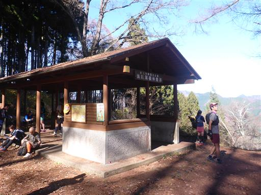
浅間嶺山頂到着。標高903m。
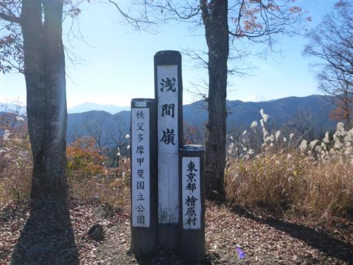
山の名の通り、富士山の頭が見えている。
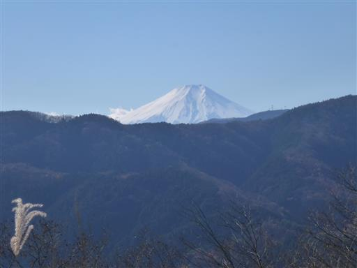
反対側は大岳山の姿が見える。
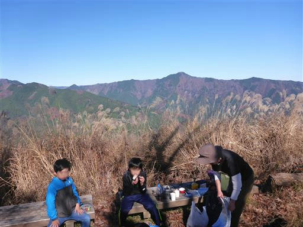
昼食を取ったら山頂出発。浅間尾根を西に向かう。
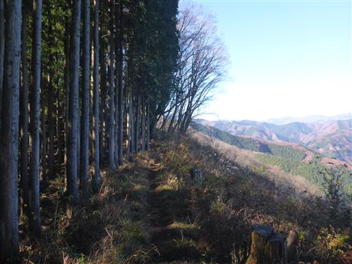
少し道が崩壊している。木が折れそうなので、左の土の上を歩く。
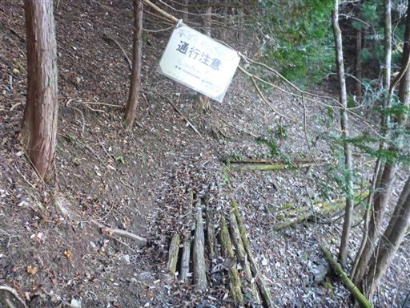
大木が立ち並ぶ足元に石祠がある。
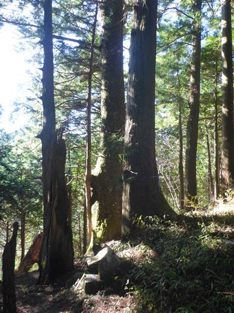
サル石。真ん中上が頭、右下が左手の拳だろうか？
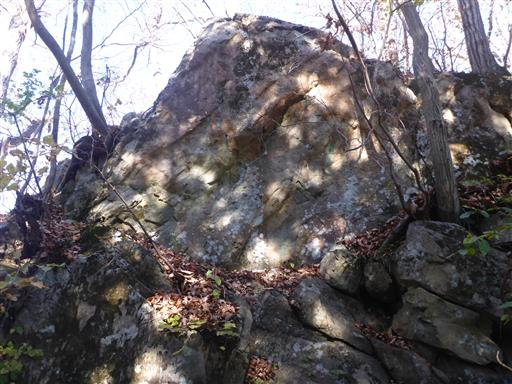
遠くから見たら石像か何かに見えたが、近づいてみてみると、ただの枯木だった。
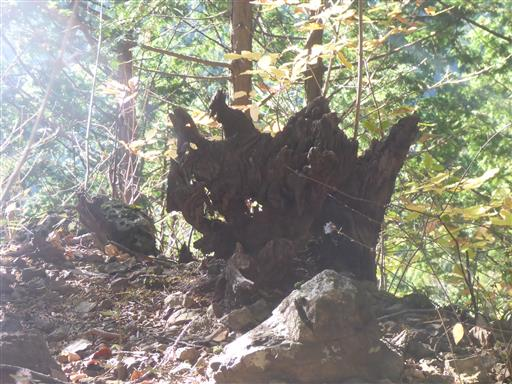
数馬峠に到着。ここから浅間尾根登山口に下山する。
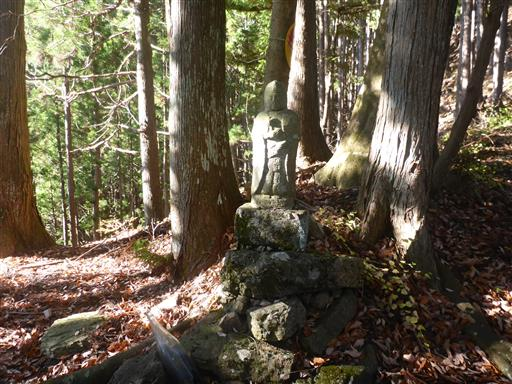
途中で廃屋に遭遇。数馬峠からの下山道は、ほぼ廃道だった。
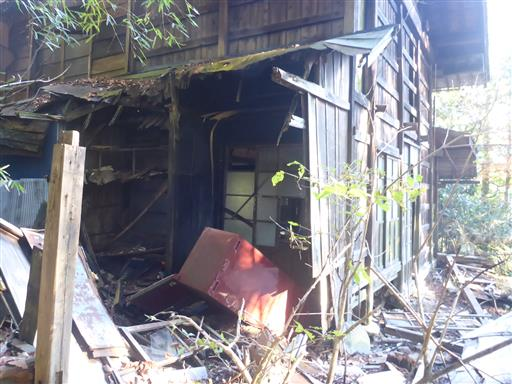
椿の花びらが積もっている。
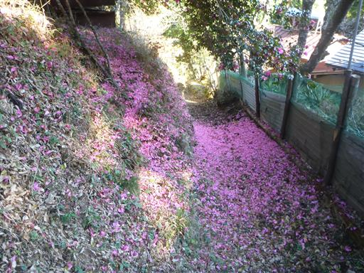
浅間尾根登山口バス停に到着。標高610m。
バスの本数がかなり少なく、予定より早く下山してしまったため、バス停でかなり待たされる。
青空の元ののんびりハイキングだった。
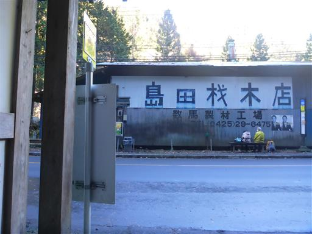